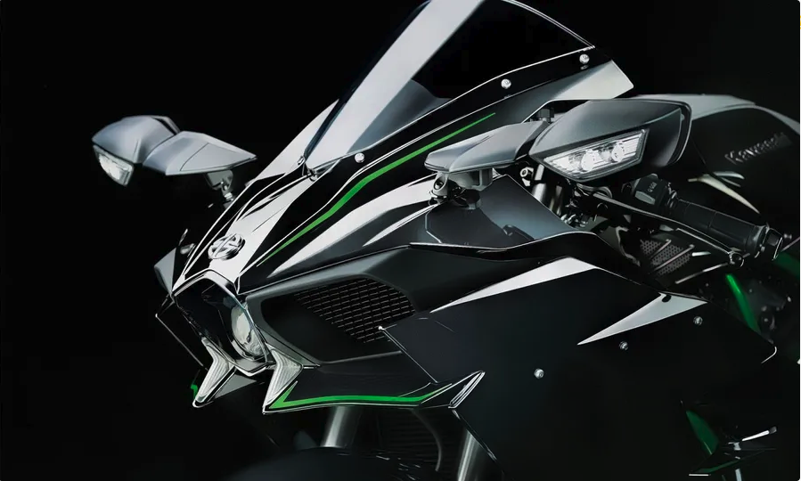
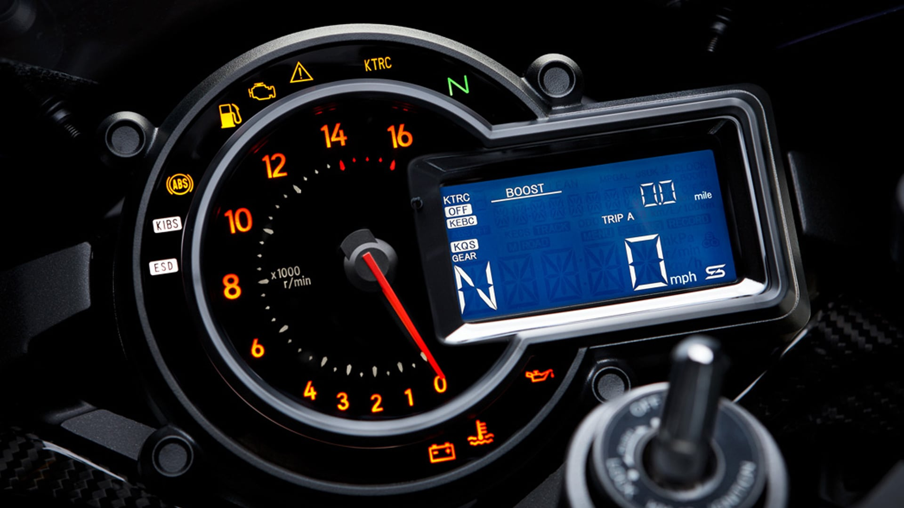
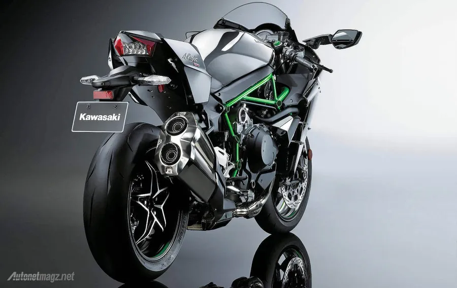

Overview
The Kawasaki Ninja H2R is a track-only hypersport motorcycle that represents the pinnacle of Kawasaki's engineering prowess. Developed through an unprecedented collaboration across multiple divisions of Kawasaki Heavy Industries, the H2R is designed exclusively for closed-course use and is not street legal. It features a supercharged 998cc inline-four engine that delivers an astonishing 326 horsepower at 14,000 rpm, making it one of the most powerful production motorcycles ever built. Its top speed exceeds 330 km/h (205 mph), and it’s equipped with advanced electronics, aerodynamic carbon fiber winglets, and a lightweight trellis frame to handle the extreme performance.
The H2R is not just about raw speed—it’s a showcase of cutting-edge technology and precision. It includes a Bosch IMU for dynamic modeling, Kawasaki Launch Control Mode (KLCM), and high-performance Brembo Stylema brakes. The suspension system is fully adjustable, featuring Öhlins components that ensure stability and control at high speeds. Every aspect of the bike, from its aggressive styling to its bank angle display and quick-shifter, is tailored for elite riders seeking uncompromising performance on the track.
With a price tag that reflects its exclusivity and engineering complexity, the Ninja H2R is more than a motorcycle—it’s a statement of technological dominance. Its in-house-designed supercharger, developed with input from Kawasaki’s aerospace and gas turbine divisions, exemplifies the brand’s commitment to pushing boundaries. The H2R is not just fast; it’s a symbol of what’s possible when innovation is unleashed without compromise
Specifications
- Engine: 998cc supercharged inline-4
- Power: 310 hp (326 hp with Ram Air)
- Top Speed: ~400 km/h
- Weight: 216 kg
- Frame: Trellis, high-tensile steel
- Brakes: Brembo Stylema front & rear
- Suspension: Öhlins fully adjustable
- Electronics: Bosch IMU, Kawasaki Launch Control Mode
Gallery



